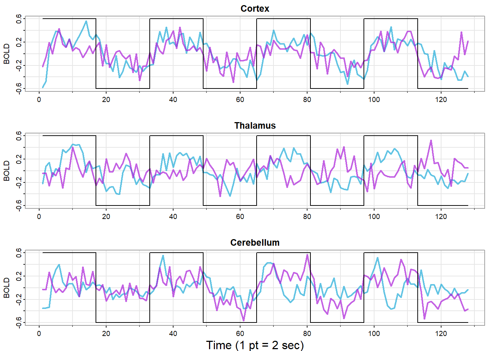

Chapter 1 第一章作业
1.1 复现课本图像
利用R语言复现课本中的时间序列图像
1.1.2 全球变暖和气候变化
culer = c(rgb(.85,.30,.12,.6),rgb(.12,.65,.85,.6))
tsplot(gtemp_land,col=culer[1], lwd=2, type = "o", pch = 20,
ylab = "Temperature Deviations", main = "Global Warming")
lines(gtemp_ocean,col=culer[2],lwd=2, type="o",pch=20)
legend("topleft",col=culer,lty = 1,lwd=2, pch = 20,
legend = c("Land Surface","Sea Surface"),bg="white")1.1.3 道琼斯工业平均指数
library(xts)
djia_return= diff(log(djia$Close))[-1]
par(mfrow=2:1)
plot(djia$Close, col=4)
plot(djia_return, col=4)
1.1.4 美国GDP对数增长率与实际增长率
tsplot(diff(log(gdp)),type = "o", col = 4, ylab = "GDP Growth")
points(diff(gdp)/lag(gdp,-1),pch=3, col=2)
1.1.7 fMRI图像
par(mfrow=c(3,1))
culer=c(rgb(.12,.67,.85,.7),rgb(.67,.12,.85,.7))
u=rep(c(rep(.6,16),rep(-.6,16)),4)
tsplot(fmri1[,4],ylab="BOLD",xlab="",main="Cortex",
col=culer[1],ylim=c(-.6,.6),lwd=2)
lines(fmri1[,5],col=culer[2],lwd=2)
lines(u,type="s")
tsplot(fmri1[,6],ylab="BOLD",xlab="",main="Thalamus",
col=culer[1],ylim=c(-.6,.6),lwd=2)
lines(fmri1[,7],col=culer[2],lwd=2)
lines(u,type="s")
tsplot(fmri1[,8],ylab="BOLD",xlab="",main="Cerebellum",
col=culer[1],ylim=c(-.6,.6),lwd=2)
lines(fmri1[,9],col=culer[2],lwd=2)
lines(u,type="s")
mtext("Time (1 pt = 2 sec)",side=1,line=1.75)
1.1.9 自回归模型
set.seed(90210)
w=rnorm(250+50) # 50 extra to avoid startup problems
x=filter(w,filter = c(1.5,-.75),method = "recursive")[-(1:50)]
tsplot(x,main="autoregression",col=4)
1.1.10 带漂移项的随机游走序列
set.seed(314159265) # so you can reproduce the results
w=rnorm(200);x =cumsum(w) # random walk
wd = w +.3; xd = cumsum (wd) # random walk with drift
tsplot(xd, ylim=c(-2,80),main="random walk", ylab="", co1=4)
abline(a=0, b=.3, lty=2, co1=4) # plot drift
lines (x, col="darkred")
abline (h=0, col="darkred", lty=2)1.2 随机数的产生
利用R语言，产生1000个服从标准正态分布的随机数，绘制散点图，计算样本均值与方差，并且标注在图形中。
# 导入ggplot2包
library(ggplot2)
# 生成1000个服从标准正态分布的随机数
set.seed(123) # 设置随机数种子，以便复现结果
x <- rnorm(1000)
# 计算样本均值和方差
mean_x <- mean(x)
var_x <- var(x)
# 使用ggplot绘制散点图，并将样本均值和方差作为图例放置在图上
ggplot(data = data.frame(x = x, index = 1:1000), aes(x = index, y = x)) +
geom_point(shape = 16) +
labs(x = "Index", y = "Value",
title = paste("Sample Mean:", round(mean_x, 2),
",Sample Variance:", round(var_x, 2))) +
theme(plot.title = element_text(hjust = 0.5, size = 12, face = "bold"),
legend.title = element_blank(),
legend.position = c(0.85, 0.85))1.3 课后习题
1.3.1 习题1.1
- 绘制\(x_t\)的线图，并把\(v_t\)作为线图作为虚线叠加
w = rnorm (150,0,1) # 50 extra to avoid startup problems
xa=filter(w,filter=c(0,-.9),method="recursive")[-(1:50)]
va = filter (xa, rep (1,4)/4, sides=1) # moving average
tsplot(xa, main="autoregression")
lines(va, col=2)- 选取\(x_t=2cos(\frac{2\pi t}{4})+w_t\)，其中\(w_t\sim iidN(0,1)\)
w = rnorm (150,0,1) # 50 extra to avoid startup problems
t=1:150
xa=(2*cos(2*pi*t/4)+w)[-(1:50)]
va = filter (xa, rep (1,4)/4, sides=1) # moving average
tsplot(xa, main="autoregression")
lines(va, col=2)- 选取\(x_t\)为取对数后的强生公司嫉妒收益率数据
library(astsa)
xa=log(jj)
va = filter (xa, rep (1,4)/4, sides=1) # moving average
tsplot(xa, main="autoregression")
lines(va, col=2)季节调整（Seasonal adjustment）是指一种用于消除季节性波动影响的统计方法。季节性波动是指由于季节、节假日等因素引起的一种周期性变化，例如在冬季，因为天气寒冷，许多行业的销售会有所下降；而在夏季，因为气温升高，冰激凌、游泳池等与夏季相关的行业销售则会增加。为了对这些季节性因素进行更准确的分析，经济学家和统计学家通常会使用季节调整技术来消除季节性影响。这个过程包括计算出一个季节调整系数，该系数可以根据历史数据中的季节性模式来预测未来数据中的季节性影响，并将其从原始数据中剔除，以得到更准确的趋势分析结果。这样做可以让人们更好地理解经济或其他变量的发展趋势，同时避免因季节性因素而产生误导性的分析结果。
在进行统计分析的过程中，应当尽可能将可能影响数据的因素包含在考虑之中，如果分析过程中忽略了重要因素的影响就可能会导致错误的分析结果，上面的季节性因素就是一个典型的例子。
1.3.2 习题1.2
- 分别绘制地震序列和爆炸序列
- 将两个线形绘制到同一个图表上
- 地震序列通常具有相对较低的峰值频率。相比之下，爆炸序列其频率范围较窄，波形相对简单且更加规则。爆炸序列的幅度和频率通常比地震序列要小，而且通常具有相对较高的峰值频率。
1.3.3 习题1.3
- 生成9个随机游走序列
- 生成9个移动平均序列
w = rnorm (500)
par(mfrow=c(3,3))
for (i in 1:9){
v=filter(w,sides = 2,filter = rep(1/3,3))
tsplot (v) }- 移动平均得到的图像看起来十分的相似，而随机游走过程得到的图像彼此之间差别比较大。
1.3.4 习题1.4
- 绘制数据的时间序列图
与1.3节中建立的模型相比，上述图像反映了时间与GDP之间的关系。
- 绘制图1.4
tsplot(diff(log(gdp)),type = "o", col = 4, ylab = "GDP Growth")
points(diff(gdp)/lag(gdp,-1),pch=3, col=2)两种方法分别采用了\(r_t\)和\(log(1+r_t)\)，观察绘制的图像，并且结合\(log(1+r)\)的Taylor展式 \[\begin{align} log(1+r_t)=r-\frac{r^2}{2}+\frac{r^3}{3}-···，-1<r\le 1 \end{align}\] 可以发现，采用\(r_t\)得到的结果更大，但是在r非常小的情况下可以忽略这种影响，近似认为两者等价。
- 1.3节中讨论到的带漂移项的随机游走序列最能描述美国GDP增长情况。